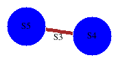

There is a range of functions in HAP that input a group \(G\), integer \(n\), and attempt to return the first \(n\) terms of a free \(\mathbb ZG\)-resolution \(R_\ast\) of the trivial module \(\mathbb Z\). In some cases an explicit contracting homotopy is provided on the resolution. The function Size(R) returns a list whose \(k\)th term is the sum of the lengths of the boundaries of the generators in degree \(k\).
The following uses discrete Morse theory to construct a resolution.
gap> G:=SymmetricGroup(6);; n:=6;; gap> R:=ResolutionFiniteGroup(G,n); Resolution of length 6 in characteristic 0 for Group([ (1,2), (1,2,3,4,5,6) ]) . gap> Size(R); [ 10, 58, 186, 452, 906, 1436 ]
The following uses linear algebra over \(\mathbb Z\) to construct a resolution.
gap> Q:=QuaternionGroup(128);; gap> R:=ResolutionSmallGroup(Q,20); Resolution of length 20 in characteristic 0 for <pc group of size 128 with 2 generators> . No contracting homotopy available. gap> Size(R); [ 4, 42, 8, 128, 4, 42, 8, 128, 4, 42, 8, 128, 4, 42, 8, 128, 4, 42, 8, 128 ]
The suspicion that this resolution \(R_\ast\) is periodic of period \(4\) can be verified by constructing the chain complex \(C_\ast=R_\ast\otimes_{\mathbb Z}\mathbb ZG\) and verifying that boundary matrices repeat with period \(4\).
A second example of a periodic resolution, for the Dihedral group \(D_{2k+1}=\langle x, y\ |\ x^2= xy^kx^{-1}y^{-k-1}\rangle\) of order \(2k+2\) in the case \(k=1\), is constructed and verified for periodicity in the next example.
gap> R:=ResolutionSmallGroup(D,15);; gap> Size(R); [ 4, 7, 8, 6, 4, 8, 8, 6, 4, 8, 8, 6, 4, 8, 8 ] gap> C:=TensorWithIntegersOverSubgroup(R,Group(One(D)));; gap> n:=4;;BoundaryMatrix(C,n)=BoundaryMatrix(C,n+4); true gap> n:=5;;BoundaryMatrix(C,n)=BoundaryMatrix(C,n+4); true gap> n:=6;;BoundaryMatrix(C,n)=BoundaryMatrix(C,n+4); true gap> n:=7;;BoundaryMatrix(C,n)=BoundaryMatrix(C,n+4); true gap> n:=8;;BoundaryMatrix(C,n)=BoundaryMatrix(C,n+4); true
This periodic resolution for \(D_3\) can be found in a paper by R. Swan [Swa60]. The resolution was proved for arbitrary \(D_{2k+1}\) by Irina Kholodna [Kho01] (Corollary 5.5) and is the cellular chain complex of the universal cover of a CW-complex \(X\) with two cells in dimensions \(1, 2 \bmod 4\) and one cell in dimensions \(0,3 \bmod 4\). The \(2\)-skelecton is the \(2\)-complex for the given presentation of \(D_{2k+1}\) and an attaching map for the \(3\)-cell is represented as follows.
A slightly different periodic resolution for \(D_{2k+1}\) has been obtain more recently by FEA Johnson [Joh16]. Johnson's resolution has two free generators in each degree. Interestingly, running the following code for many values of \(k >1\) seems to produce a periodic resolution with two free generators in each degree for most values of \(k\).
gap> k:=20;;rels:=[x^2,x*y^k*x^-1*y^(-1-k)];;D:=F/rels;; gap> R:=ResolutionSmallGroup(D,7);; gap> List([0..7],R!.dimension); [ 1, 2, 2, 2, 2, 2, 2, 2 ]
The following uses Polymake convex hull computations and homological perturbation theory to construct a resolution.
gap> G:=SignedPermutationGroup(5);; gap> StructureDescription(G); "C2 x ((C2 x C2 x C2 x C2) : S5)" gap> v:=[1,2,3,4,5];; #The resolution depends on the choice of vector. gap> P:=PolytopalComplex(G,[1,2,3,4,5]); Non-free resolution in characteristic 0 for <matrix group of size 3840 with 9 generators> . No contracting homotopy available. gap> R:=FreeGResolution(P,6); Resolution of length 5 in characteristic 0 for <matrix group of size 3840 with 9 generators> . No contracting homotopy available. gap> Size(R); [ 10, 60, 214, 694, 6247, 273600 ]
The convex polytope \(P_G(v)={\rm Convex~Hull}\{g\cdot v\ |\ g\in G\}\) used in the resolution depends on the choice of vector \(v\in \mathbb R^n\). Two such polytopes for the alternating group \(G=A_4\) acting on \(\mathbb R^4\) can be visualized as follows.
gap> G:=AlternatingGroup(4);; gap> OrbitPolytope(G,[1,2,3,4],["VISUAL"]); gap> OrbitPolytope(G,[1,1,3,4],["VISUAL"]); gap> P1:=PolytopalComplex(G,[1,2,3,4]);; gap> P2:=PolytopalComplex(G,[1,1,3,4]);; gap> R1:=FreeGResolution(P1,20);; gap> R2:=FreeGResolution(P2,20);; gap> Size(R1); [ 6, 11, 32, 24, 36, 60, 65, 102, 116, 168, 172, 248, 323, 628, 650, 1093, 1107, 2456, 2344, 6115 ] gap> Size(R2); [ 4, 11, 20, 24, 36, 60, 65, 102, 116, 168, 172, 248, 323, 628, 650, 1093, 1107, 2456, 2344, 6115 ]
The following uses linear algebra to construct a minimal free \(\mathbb F_pG\)-resolution of the trivial module \(\mathbb F\).
gap> P:=SylowSubgroup(MathieuGroup(12),2);; gap> R:=ResolutionPrimePowerGroup(P,20); Resolution of length 20 in characteristic 2 for Group( [ (2,8,4,12)(3,11,7,9), (2,3)(4,7)(6,10)(9,11), (3,7)(6,10)(8,11)(9,12), (1,10)(3,7)(5,6)(8,12), (2,4)(3,7)(8,12)(9,11), (1,5)(6,10)(8,12)(9,11) ]) . gap> Size(R); [ 6, 62, 282, 740, 1810, 3518, 6440, 10600, 17040, 24162, 34774, 49874, 62416, 81780, 106406, 145368, 172282, 208926, 262938, 320558 ]
The resolution has the minimum number of generators possible in each degree and can be used to guess a formula for the Poincare series
\(P(x) = \Sigma_{k\ge 0} \dim_{\mathbb F_p}H^k(G,\mathbb F_p)\,x^k\).
The guess is certainly correct for the coefficients of \(x^k\) for \(k\le 20\) and can be used to guess the dimension of say \(H^{2000}(G,\mathbb F_p)\).
Most likely \(\dim_{\mathbb F_2}H^{2000}(G,\mathbb F_2) = 2001000\).
gap> P:=PoincareSeries(R,20); (1)/(-x_1^3+3*x_1^2-3*x_1+1) gap> ExpansionOfRationalFunction(P,2000)[2000]; 2001000
The following uses the formula for the tensor product of chain complexes to construct a resolution.
gap> A:=AbelianPcpGroup([2,4,8,0,0]);; gap> StructureDescription(A); "Z x Z x C8 x C4 x C2" gap> R:=ResolutionAbelianGroup(A,10); Resolution of length 10 in characteristic 0 for Pcp-group with orders [ 2, 4, 8, 0, 0 ] . gap> Size(R); [ 14, 90, 296, 680, 1256, 2024, 2984, 4136, 5480, 7016 ]
The following uses the NQ package to express the free nilpotent group of class \(3\) on three generators as a Pcp group \(G\), and then uses homological perturbation on the lower central series to construct a resolution. The resolution is used to exhibit \(2\)-torsion in \(H_4(G,\mathbb Z)\).
gap> F:=FreeGroup(3);; gap> G:=Image(NqEpimorphismNilpotentQuotient(F,3));; gap> R:=ResolutionNilpotentGroup(G,5); Resolution of length 5 in characteristic 0 for Pcp-group with orders [ 0, 0, 0, 0, 0, 0, 0, 0, 0, 0, 0, 0, 0, 0 ] . gap> Size(R); [ 28, 377, 2377, 9369, 25850 ] gap> Homology(TensorWithIntegers(R),4); [ 2, 2, 2, 0, 0, 0, 0, 0, 0, 0, 0, 0, 0, 0, 0, 0, 0, 0, 0, 0, 0, 0, 0, 0, 0, 0, 0, 0, 0, 0, 0, 0, 0, 0, 0, 0, 0, 0, 0, 0, 0, 0, 0, 0, 0, 0, 0, 0, 0, 0, 0, 0, 0, 0, 0, 0, 0, 0, 0, 0, 0, 0, 0, 0, 0, 0, 0, 0, 0, 0, 0, 0, 0, 0, 0, 0, 0, 0, 0, 0, 0, 0, 0, 0, 0, 0, 0, 0, 0, 0, 0, 0, 0, 0, 0, 0, 0, 0, 0, 0, 0, 0, 0, 0, 0, 0, 0, 0, 0, 0, 0, 0, 0, 0, 0, 0, 0, 0, 0, 0, 0, 0, 0, 0, 0, 0, 0, 0, 0, 0, 0, 0, 0, 0, 0, 0, 0, 0, 0, 0, 0, 0, 0, 0, 0, 0, 0, 0, 0, 0, 0, 0, 0, 0, 0, 0, 0, 0, 0, 0, 0, 0, 0, 0, 0, 0, 0, 0, 0, 0, 0, 0, 0, 0 ]
The following uses homological perturbation on the lower central series to construct a resolution for the Sylow \(2\)-subgroup \(P=Syl_2(M_{12})\) of the Mathieu simple group \(M_{12}\).
gap> G:=MathieuGroup(12);; gap> P:=SylowSubgroup(G,2);; gap> StructureDescription(P); "((C4 x C4) : C2) : C2" gap> R:=ResolutionNilpotentGroup(P,9); Resolution of length 9 in characteristic 0 for <permutation group with 279 generators> . gap> Size(R); [ 12, 80, 310, 939, 2556, 6768, 19302, 61786, 237068 ]
The following uses homological perturbation on a subnormal series to construct a resolution for the Sylow \(2\)-subgroup \(P=Syl_2(M_{12})\) of the Mathieu simple group \(M_{12}\).
gap> P:=SylowSubgroup(MathieuGroup(12),2);; gap> sn:=ElementaryAbelianSeries(P);; gap> R:=ResolutionSubnormalSeries(sn,9); Resolution of length 9 in characteristic 0 for <permutation group with 64 generators> . gap> Size(R); [ 12, 78, 288, 812, 1950, 4256, 8837, 18230, 39120 ]
The following uses homological perturbation on a normal series to construct a resolution for the Sylow \(2\)-subgroup \(P=Syl_2(M_{12})\) of the Mathieu simple group \(M_{12}\).
gap> P:=SylowSubgroup(MathieuGroup(12),2);; gap> P1:=EfficientNormalSubgroups(P)[1];; gap> P2:=Intersection(DerivedSubgroup(P),P1);; gap> P3:=Group(One(P));; gap> R:=ResolutionNormalSeries([P,P1,P2,P3],9); Resolution of length 9 in characteristic 0 for <permutation group with 64 generators> . gap> Size(R); [ 10, 60, 200, 532, 1238, 2804, 6338, 15528, 40649 ]
The following uses the Polycyclic package and homological perturbation to construct a resolution for the crystallographic group G:=SpaceGroup(3,165).
gap> G:=SpaceGroup(3,165);; gap> G:=Image(IsomorphismPcpGroup(G));; gap> R:=ResolutionAlmostCrystalGroup(G,20); Resolution of length 20 in characteristic 0 for Pcp-group with orders [ 3, 2, 0, 0, 0 ] . gap> Size(R); [ 10, 49, 117, 195, 273, 351, 429, 507, 585, 663, 741, 819, 897, 975, 1053, 1131, 1209, 1287, 1365, 1443 ]
The following constructs a resolution for an almost crystallographic Pcp group \(G\). The final commands establish that \(G\) is not isomorphic to a crystallographic group.
gap> G:=AlmostCrystallographicPcpGroup( 4, 50, [ 1, -4, 1, 2 ] );; gap> R:=ResolutionAlmostCrystalGroup(G,20); Resolution of length 20 in characteristic 0 for Pcp-group with orders [ 4, 0, 0, 0, 0 ] . gap> Size(R); [ 10, 53, 137, 207, 223, 223, 223, 223, 223, 223, 223, 223, 223, 223, 223, 223, 223, 223, 223, 223 ] gap> T:=Kernel(NaturalHomomorphismOnHolonomyGroup(G));; gap> IsAbelian(T); false
The following constructs a resolution for the Bieberbach group G=SpaceGroup(3,165) by using convex hull algorithms to construct a Dirichlet domain for its free action on Euclidean space \(\mathbb R^3\). By construction the resolution is trivial in degrees \(\ge 3\).
gap> G:=SpaceGroup(3,165);; gap> R:=ResolutionBieberbachGroup(G); Resolution of length 4 in characteristic 0 for SpaceGroupOnRightBBNWZ( 3, 6, 1, 1, 4 ) . No contracting homotopy available. gap> Size(R); [ 10, 18, 8, 0 ]
The fundamental domain constructed for the above resolution can be visualized using the following commands.
gap> F:=FundamentalDomainBieberbachGroup(G); <polymake object> gap> Display(F);
A different fundamental domain and resolution for \(G\) can be obtained by changing the choice of vector \(v\in \mathbb R^3\) in the definition of the Dirichlet domain
\(D(v) = \{x\in \mathbb R^3\ | \ ||x-v|| \le ||x-g.v||\ {\rm for~all~} g\in G\}\).
gap> R:=ResolutionBieberbachGroup(G,[1/2,1/2,1/2]); Resolution of length 4 in characteristic 0 for SpaceGroupOnRightBBNWZ( 3, 6, 1, 1, 4 ) . No contracting homotopy available. gap> Size(R); [ 28, 42, 16, 0 ] gap> F:=FundamentalDomainBieberbachGroup(G); <polymake object> gap> Display(F);
A higher dimensional example is handled in the next session. A list of the \(62\) \(7\)-dimensional Hantze-Wendt Bieberbach groups is loaded and a resolution is computed for the first group in the list.
gap> file:=HapFile("HW-7dim.txt");; gap> Read(file); gap> G:=HWO7Gr[1]; <matrix group with 7 generators> gap> R:=ResolutionBieberbachGroup(G); Resolution of length 8 in characteristic 0 for <matrix group with 7 generators> . No contracting homotopy available. gap> Size(R); [ 284, 1512, 3780, 4480, 2520, 840, 84, 0 ]
The homological perturbation techniques needed to extend this method to crystallographic groups acting non-freely on \(\mathbb R^n\) has not yet been implemenyed. This is on the TO-DO list.
An implementation of the above method for Bieberbach groups is also available for arbitrary crystallographic groups. The following example constructs a resolution for the group G:=SpaceGroupIT(3,227).
gap> G:=SpaceGroupIT(3,227);; gap> R:=ResolutionSpaceGroup(G,11); Resolution of length 11 in characteristic 0 for <matrix group with 8 generators> . No contracting homotopy available. gap> Size(R); [ 38, 246, 456, 644, 980, 1427, 2141, 2957, 3993, 4911, 6179 ]
The following uses subdivision techniques to construct a resolution for the Bieberbach group G:=SpaceGroup(4,122). The resolution is endowed with a contracting homotopy.
gap> G:=SpaceGroup(4,122);; gap> R:=ResolutionCubicalCrystGroup(G,20); Resolution of length 20 in characteristic 0 for <matrix group with 6 generators> . gap> Size(R); [ 8, 24, 24, 8, 0, 0, 0, 0, 0, 0, 0, 0, 0, 0, 0, 0, 0, 0, 0, 0 ]
Subdivision and homological perturbation are used to construct the following resolution (with contracting homotopy) for a crystallographic group with non-free action.
gap> G:=SpaceGroup(4,1100);; gap> R:=ResolutionCubicalCrystGroup(G,20); Resolution of length 20 in characteristic 0 for <matrix group with 8 generators> . gap> Size(R); [ 40, 215, 522, 738, 962, 1198, 1466, 1734, 2034, 2334, 2666, 2998, 3362, 3726, 4122, 4518, 4946, 5374, 5834, 6294 ]
The following session constructs the Coxeter diagram for the Coxeter group \(B=B_7\) of order \(645120\). A resolution for \(G\) is then computed.
gap> D:=[[1,[2,3]],[2,[3,3]],[3,[4,3]],[4,[5,3]],[5,[6,3]],[6,[7,4]]];; gap> CoxeterDiagramDisplay(D);;
gap> R:=ResolutionCoxeterGroup(D,5); Resolution of length 5 in characteristic 0 for <permutation group of size 645120 with 7 generators> . No contracting homotopy available. gap> Size(R); [ 14, 112, 492, 1604, 5048 ]
The routine extension of this method to infinite Coxeter groups is on the TO-DO list.
The following session constructs a resolution for the infinite Artin group \(G\) associated to the Coxeter group \(B_7\). Exactness of the resolution depends on the solution to the \(K(\pi,1)\) Conjecture for Artin groups of spherical type.
gap> R:=ResolutionArtinGroup(D,8); Resolution of length 8 in characteristic 0 for <fp group on the generators [ f1, f2, f3, f4, f5, f6, f7 ]UNKNOWNEntity(gr) . No contracting homotopy available. gap> Size(R); [ 14, 98, 310, 610, 918, 1326, 2186, 0 ]
The following uses homological perturbation to construct a resolution for \(G=SL_2(\mathbb Z[1/6])\).
gap> R:=ResolutionSL2Z(6,10); Resolution of length 10 in characteristic 0 for SL(2,Z[1/6]) . gap> Size(R); [ 44, 679, 6910, 21304, 24362, 48506, 43846, 90928, 86039, 196210 ]
The following uses finite "Voronoi complexes" and homological perturbation to construct a resolution for \(G=SL_2({\mathcal O}(\mathbb Q(\sqrt{-5}))\). The finite complexes were contributed independently by A. Rahm, M. Dutour-Scikiric and S. Schoenenbeck and are stored in the folder ~pkg/Hap1.v/lib/Perturbations/Gcomplexes.
gap> R:=ResolutionSL2QuadraticIntegers(-5,10); Resolution of length 10 in characteristic 0 for matrix group . No contracting homotopy available. gap> Size(R); [ 22, 114, 120, 200, 146, 156, 136, 254, 168, 170 ]
The following uses finite "Voronoi complexes" and homological perturbation to construct a resolution for \(G=PSL_2({\mathcal O}(\mathbb Q(\sqrt{-11}))\). The finite complexes were contributed independently by A. Rahm, M. Dutour-Scikiric and S. Schoenenbeck and are stored in the folder ~pkg/Hap1.v/lib/Perturbations/Gcomplexes.
gap> R:=ResolutionPSL2QuadraticIntegers(-11,10); Resolution of length 10 in characteristic 0 for PSL(2,O-11) . No contracting homotopy available. gap> Size(R); [ 12, 59, 89, 107, 125, 230, 208, 270, 326, 515 ]
The following uses finite "Voronoi complexes" and homological perturbation to construct a resolution for \(G=PSL_4(\mathbb Z)\). The finite complexes were contributed by M. Dutour-Scikiric and are stored in the folder ~pkg/Hap1.v/lib/Perturbations/Gcomplexes.
gap> V:=ContractibleGcomplex("PSL(4,Z)_d"); Non-free resolution in characteristic 0 for matrix group . No contracting homotopy available. gap> R:=FreeGResolution(V,5); Resolution of length 5 in characteristic 0 for matrix group . No contracting homotopy available. gap> Size(R); [ 18, 210, 1444, 26813 ]
The next commands first construct the congruence subgroup \(\Gamma_0(I)\) of index \(144\) in \(SL_2({\cal O}\mathbb Q(\sqrt{-2}))\) for the ideal \(I\) in \({\cal O}\mathbb Q(\sqrt{-2})\) generated by \(4+5\sqrt{-2}\). The commands then compute a resolution for the congruence subgroup \(G=\Gamma_0(I) \le SL_2({\cal O}\mathbb Q(\sqrt{-2}))\)
gap> Q:=QuadraticNumberField(-2);; gap> OQ:=RingOfIntegers(Q);; gap> I:=QuadraticIdeal(OQ,4+5*Sqrt(-2));; gap> G:=HAP_CongruenceSubgroupGamma0(I); <[group of 2x2 matrices in characteristic 0> gap> gap> IndexInSL2O(G); 144 gap> R:=ResolutionSL2QuadraticIntegers(-2,4,true);; gap> S:=ResolutionFiniteSubgroup(R,G); Resolution of length 4 in characteristic 0 for <matrix group with 290 generators> . gap> Size(S); [ 1152, 8496, 30960, 59616 ]
The next commands construct a resolution \(R_\ast\) for the symmetric group \(S_5\) and convert it to a resolution \(S_\ast\) for the finite index subgroup \(A_4 < S_5\). An heuristic algorithm is applied to \(S_\ast\) in the hope of obtaining a smaller resolution \(T_\ast\) for the alternating group \(A_4\).
gap> R:=ResolutionFiniteGroup(SymmetricGroup(5),5);; gap> S:=ResolutionFiniteSubgroup(R,AlternatingGroup(4)); Resolution of length 5 in characteristic 0 for Alt( [ 1 .. 4 ] ) . gap> Size(S); [ 80, 380, 1000, 2040, 3400 ] gap> T:=SimplifiedComplex(S); Resolution of length 5 in characteristic 0 for Alt( [ 1 .. 4 ] ) . gap> Size(T); [ 4, 34, 22, 19, 196 ]
The following example constructs a resolution for a finitely presented group whose presentation is known to have the property that its associated \(2\)-complex is aspherical.
gap> F:=FreeGroup(3);;x:=F.1;;y:=F.2;;z:=F.3;; gap> rels:=[x*y*x*(y*x*y)^-1, y*z*y*(z*y*z)^-1, z*x*z*(x*z*x)^-1];; gap> G:=F/rels;; gap> R:=ResolutionAsphericalPresentation(G,10); Resolution of length 10 in characteristic 0 for <fp group on the generators [ f1, f2, f3 ]> . No contracting homotopy available. gap> Size(R); [ 6, 18, 0, 0, 0, 0, 0, 0, 0, 0 ]
The following commands create a resolution for a graph of groups corresponding to the amalgamated product \(G=H\ast_AK\) where \(H=S_5\) is the symmetric group of degree \(5\), \(K=S_4\) is the symmetric group of degree \(4\) and the common subgroup is \(A=S_3\).
gap> S5:=SymmetricGroup(5);SetName(S5,"S5");; Sym( [ 1 .. 5 ] ) gap> S4:=SymmetricGroup(4);SetName(S4,"S4");; Sym( [ 1 .. 4 ] ) gap> A:=SymmetricGroup(3);SetName(A,"S3");; Sym( [ 1 .. 3 ] ) gap> AS5:=GroupHomomorphismByFunction(A,S5,x->x);; gap> AS4:=GroupHomomorphismByFunction(A,S4,x->x);; gap> D:=[S5,S4,[AS5,AS4]];; gap> GraphOfGroupsDisplay(D);;

gap> R:=ResolutionGraphOfGroups(D,8);; gap> Size(R); [ 16, 68, 162, 302, 480, 627, 869, 1290 ]
Let \(\mathbb F=\mathbb F_p\) be the field of \(p\) elements and let \(M\) be some \(\mathbb FG\)-module. We might wish to construct a free \(\mathbb FG\)-resolution for \(M\). We can handle this by constructing a short exact sequence
\( DM \rightarrowtail P \twoheadrightarrow M\)
in which \(P\) is free (or projective). Then any resolution of \(DM\) yields a resolution of \(M\) and we can represent \(DM\) as a submodule of \(P\). We refer to \(DM\) as the desuspension of \(M\). Consider for instance \(G=Syl_2(GL(4,2))\) and \(\mathbb F=\mathbb F_2\). The matrix group \(G\) acts via matrix multiplication on \(M=\mathbb F^4\). The following example constructs a free \(\mathbb FG\)-resolution for \(M\).
gap> G:=GL(4,2);; gap> S:=SylowSubgroup(G,2);; gap> M:=GModuleByMats(GeneratorsOfGroup(S),GF(2));; gap> DM:=DesuspensionMtxModule(M);; gap> R:=ResolutionFpGModule(DM,20); Resolution of length 20 in characteristic 2 for <matrix group of size 64 with 3 generators> . gap> List([0..20],R!.dimension); [ 3, 6, 10, 15, 21, 28, 36, 45, 55, 66, 78, 91, 105, 120, 136, 153, 171, 190, 210, 231, 253 ]
generated by GAPDoc2HTML